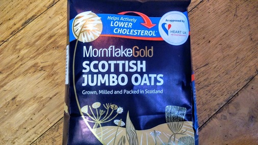
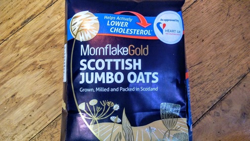
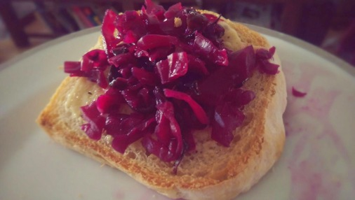
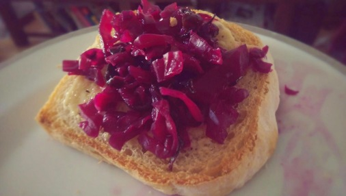
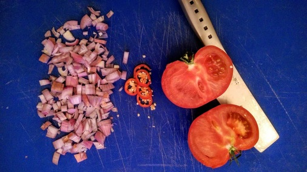
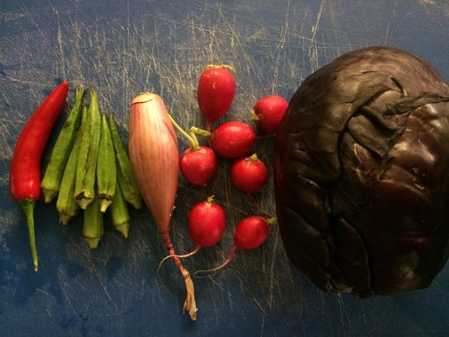
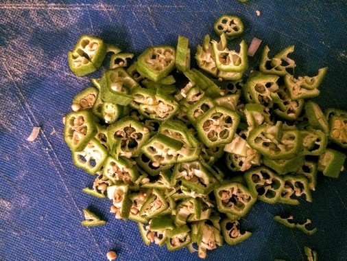
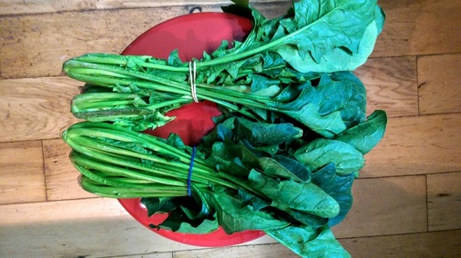

Shop bought bread can really only come from a proper baker. In this case it's chewy white from Real Pâtisserie.
You can also buy Real Pâtisserie bread from Taj but it mostly comes in perforated plastic bags. Apart from the baguettes!
At a push you could buy buns from Waitrose and put them in the plain paper bags from the mushroom section rather than those with the plastic panel.

Cracking sea salt and rosemary sourdough from hisBe.

Deft lame work from Silo.

Changes I've made since meeting Silo/Trash is for Tossers/Alchemy Flow in 2014:
There are a few biodegradable options for toothbrushes.
https://www.brushwithbamboo.com/
Lots of options for buying soap without packaging but this is by Faith In Nature and smells of rosemary. Bought from hisBe.
And a Vatika bar from Taj wrapped only in cardboard.

Loose fabric conditioner from hisBe:

I used to use Billington's for bread making but why does it only come wrapped in plastic? Old school Tate and Lyle it is.

Paper packaging, made in Britain: cannot argue with that.

Or just for kicks why not try coconut sugar?

hisBe have pulled out the stops and are now enabling us to buy salt without also buying bits of plastic to pour it with.

Alternatively, Tidman's might just save the day.
http://www.maldonsalt.co.uk/Products-Tidmans-Salt.html
Not something I'd even considered buying loose. hisBe are great.


Spoilt for choice with honey. This was excellent from Surrey. So good I ate it before I managed to take a photo.

A great selection of Payne's honey from Taj.

The first oats I found that didn't come in a plastic bag or a box with a plastic panel. They even suggest you compost the packet. Love Pimhill Farm!

Loose oats from hisBe are very reasonably priced and you can take your own vessel.

I'm very fond of Wessex Mill's bread flour and just spotted their oats in Taj.

And a couple from Waitrose in paper packaging. However, if we're going to be fussy - and we shall - they both feature an unnecessary plastic tab on the top.
 

Why would you buy a net of tiny lemons from a supermarket when you could have these beauties?

And finally some loose British apples from Taj!

Loose apples from Waitrose.

And loose French Pink Ladies from Sainsbury's Local. Expensive at £4+ per kilo but still.

By contrast, organic apples from Waitrose. Each sealed in plastic and with a choice of carbon footprint: Argentina, Chile or New Zealand.
A lot of things can only be found in hisBe.
Deydrated coconut

Cacao nibs

Loose plain, milk and white chocolate buttons. They're only £10/Kg too, whereas Waitrose is at £15-20/Kg for a 100g bar of Green and Blacks. And you have to do something with the packaging.

Dried goji berries.

Loose apricots from Taj.

Taj hack: they don't offer paper bags apart from for the takeaway curries and the baguettes. So go and use them!
Heath and Heather offer tea without the unnecessary paper pouches.

Failing that, Pukka do tea in wholly recyclable paper packaging.

As do Yogi. But be careful as I have seen some in plastic wrap!

And Clipper.
As an aside: all three look like they're tied shut. But the Heath and Heather also appear to be thermally sealed suggesting a small quantity of plastic in the paper mix.
In the week newspapers are OK but inexplicably at the weekend the food/environment pullouts come in a plastic bag.
Fermentation is not readily practiced by much of society but a great skill and will get you on the road to preserving things when there’s an abundance.
All these recipes use a percentage of salt. If 1.6% salt is required, 1000g of veg would need 16g of salt. But you should always taste the raw mix before bottling.
Shop bought fermented goods are pretty pricey considering it's mostly cabbage. But it's really easy to get involved.
There's plenty of shop-bought kimchi in Brighton but very few in eco-friendly packaging. So why not make your own?
Chop everything and mix in the salt. Crush with your hands to get the juices flowing (if it's a particularly tough cabbage you might need to use a pestle). Leave for ten minutes and repeat until there's a good amount of liquid in the bottom of the bowl.
Pack into a glass jar leaving about 20% expansion space and close the lid.
Keep out of the sunlight, it should start to bubble by day two. Taste it after a week. Is it delicious? If so, eat on homemade bread with aioli.
The flavour profile evolves over the course of a few weeks. If you manage to not eat it all you'll notice the taste drops off after a few weeks. If you really like the taste on a certain day move it to the fridge to slow it down.
 

A very quick ferment that goes with anything.
The denser the vegetable the finer it needs cutting.
Put it all into a mixing bowl on a scale, add 1.6% of the weight of the veg in salt. Mush it between your fingers until mixed and quite liquid. Add to a jar, almost to the brim, pop the lid on and leave in a dark cupboard for up to a week. You can put it in a fridge if you like but the acidity should stop anything untoward occurring.
Put everything in a mixing bowl on a scale, add 1.6% of the weight of the veg in salt. Mush it between your fingers until mixed and quite liquid. Taste and then dd to a jar, almost to the brim, pop the lid on and leave in a dark cupboard for up to a week. You can put it in a fridge if you like but the acidity should stop anything untoward occurring.
 
A experiment to see how okra behaves. The addition of okra makes it quite slippery! So possibly not for everybody. But still.
  
Bison Brewery sell large refillable bottles of beer affectionately known as "growlers" from their shop on East Street. If purchasing tins of beer then don't choose those with six-pack rings. Ten packs come in a cardboard box with no plastic. Or go to the pub. Or brew your own!

Image by Plastic Soup Foundation.
What's the best way to assess your plastic usage? Keep all of it.
Pledge to keep everything that is neither biodegradable nor recyclable in your area or office. A nice idea is to fill a jar and see how long it takes to fill it. It makes it all the more horrifying when you have to thrown it away in bulk, knowing that it's destined for the landfill.
It also makes you consider how much you want that bag of crisps knowing that the bag will be hanging around for decades. Conveniently, processed food usually comes in plastic so it makes it quite easy to avoid.


It goes without saying: no plastic bags. Ever! People argue that they reuse them, but how many times must they be reused to justify the decades they will be hanging around afterwards? Must they be handed down to their children to offset the manufacturing cost and environmental impact? Even official bags-for-life are unlikely to last for the duration of your lifetime as claimed. But a cotton bag will at least have a chance of decomposition when it has reached the end of its useful life.
The answer can only be to not use plastic bags at all. See this article in the Wall Street Journal.
Various Twitter chat about plastic bags:
Waitrose
Dean Turbo @deanturbo Jan 3 2016:
"@waitrose hi! Can beercan plastic rings go in with the plastic bag recycling? And are they sorted manually when they leave the store?"
Waitrose @waitrose Jan 3 2016:
"@deanturbo I'm afraid not - only plastic bags and film displaying the OPRL logo can be recycled"
On-Pack Recycling Label: http://www.oprl.org.uk/
Sainsbury's
Dean Turbo @deanturbo Jan 12 2016:
"@sainsburys Hi! Just noticed the 5p bags don't have the OPRL logo on them. Does this mean they can't be recycled in store?"
Sainsbury's @sainsburys Jan 12 2016:
"@deanturbo Hi Dean, they're made of recycled material and are recyclable, we'll replace them free of charge if they become damaged."
And here are some biodegradable bin bags from Infinity Foods. See d2w.

It matters more if you have nobody to bequeath your plastic legacy.
Because you don't pay for it. Some things are prohibitively expensive to recycle and it's the consumer's job to refuse them.
We have evolved to be able to eat animals. But does that mean it's good for us? And the planet? We could exist by eating only puffins but would we be healthy? Equally we can live perfectly happily on plants.
We can only consume our own species?
But does it matter? You're still slaughtering and eating them. Is this for your benefit or the animal?
How can you love animals and eat any of them? You love consuming animals? You love some animals and eat the rest?
You just want to help them into your belly! How can that not be hypocritical? You just want to help some of the animals.
What's acceptable to eat is, of course, completely arbitrary and driven by culture and religion.
Is it size? I don't think so: cows are good (unless you're Hindu), horses bad.
Is it intelligence? No, pigs are pretty smart.
Is it availability? Still no. Tigers bad, cod fine.
Is it cuteness? Absolutely not. We eat tonnes of lamb but foxes go untouched. (Bar the sport.)
For survival, perhaps. But we grow plants to mass produce animals. If they're ours to eat why stop at one level of indirection? Why not fell forests to grow soy to raise cattle to rear crocodiles and then eat the crocodiles? Perhaps soy-fed cow crocs are tastier than grass-fed cattle?
Or we could just eat the soy and live perfectly healthy lives without killing anything.
The veggie ready meal section in Waitrose. Without exception each has a plastic tray or panel.

Interestingly the frozen section has plenty of choice in simply packaged products. We prefer a plastic panel on our fresh stuff?

Before long all you see is plastic. Equal-portioned high-carbon footprint produce condemned to a petrochemical tomb. As nature intended.
I've been thinking about this granola for a while. It's quite hard to buy dried fruit without also buying a plastic bag.

Combine everything bar the berries (lest they burn), spread on a tray and cook at 200C for 8 minutes until brown (give it a stir around halfway through). I tend to chuck the berries on top when it comes out of the oven.
Actually you can chuck just about anything in and 60g seems a good proportion. I try not to make it too much about seeds but hemp and flax make an interesting addition. And if you're feeling flush you can omit the sugar and double up on the honey. I have tried olive oil when I've run out of coconut but it seems to catch (burn) very easily. Keep an eye on it.
Once you're happy with it check your Twitter for a while whilst it cools and transfer to an airtight container. This does keep it nice and crisp but we're all busy people and it will keep quite happily for a week covered with another baking tray.
Starting with 300g of oats makes one baking tray's worth. I tend to do two at once, the lower one stays in for the first eight minutes, stir and then I bring it to the top for a further four minutes.
Paper packaging in the recycling and reuse the jars.


Plant pots made with a Kinkajou bottle cutter.

From Brighton and Hove recycling FAQ
Plastic bottles are the only plastics that Brighton & Hove and many other local authorities currently recycle. Plastic bottles are mainly made from PET plastic (soft drinks and water bottles) and HDPE (milk and detergent bottles). There are already markets for plastic bottles as these can be recycled back into bottles or even fleeces!
There are several reasons why other plastics are not currently being recycled. These include: - There are not well developed and secure markets for all plastics. This means we may not be able to sell them on. - Even though some items such as food trays might be made from PET, they have different properties than the PET used to make bottles. This means we may not be able to process the material. - Plastics are used to make food trays and there is a concern that residents might place trays out for recycling that still contain food. If too much recycling becomes contaminated, it cannot be processed.
Yes as the lids are made from different plastics so can contaminate the recycling. Please wash and squash your plastic bottles and put them in your recycling box without lids.
And come contradictory advice from Twitter:
BHCC_Cityclean (@RecyclingRefuse) Jan 7 2016, on communal recycling bins: If you're removing plastic lids from glass bottles, just unscrew the top and leave the ring attached to the bottle. You can cut them off if you really want to remove them. Plastic bottles can have them left on. Ryan.
Couldn't find the Tetra Pack recycling point on the council website but it's here. Magpie might collect them too.

Alpro and granaVita have slightly fewer components: some of them have an extra plastic bung.
And Bonsoy has no plastic bits... yey! (But it is twice the price.)

It's easy to forget how convenient it is for somebody else to sort your rubbish out for you. Brighton during the bin strike, June 2013.

Zero-waste restaurant/cafe/coffee. Not vegetarian but increasingly plant-focused. Their in-house composter (which actually lives in the restaurant) has such an appetite that they also take in waste from the surrounding businesses.
Burger specialists and they use reassuringly biodegradable boxes.
What appears to be convenience for the shopper is really slight of hand by the mass producer. The producer enjoys longer shelf-life and protection during shipping and disposing of the packaging is passed on to the consumer.
Firmly established vegetarian shop and organic advocate. Almost all of their veg is loose and they also have an excellent in-house bakery.
The go-to place for package free shopping. A large choice of produce in hoppers, either take your own jars or use their own paper bags.
See also The Food Shed.
Long-established vegetarian supermarket.
All major supermarkets pack their greens in plastic so they're out. However, Taj offer bundles of spinach with no packaging. They also sell lots of herbs and spices that you often don't see loose.
 

You can repurpose the rubber bands from the spinach or make an awesome rubber band ball.
A fantastic selection of loose tea and tea-supping accoutrements. 10% discount for bringing your own pot.


High end cheese shop. And the only one that gets it.

It's also worth considering Labneh (curd/yoghurt) in a reusable jar from Taj.

Remember to take your flask for the free coffee.
Quite a nice illustration of the craziness of packaging! The same mushrooms appear to be cheaper if you put them in a paper bag yourself.

You can buy two loose peppers. Or two peppers in a plastic bag.

Paper from FSC approved sources, the wrapper can go in the in-store bag recycling. 
Bamboo socks in card packaging.
We're fortunate enough to have a good supply in Brighton so it's difficult to justify bottled water. But it is of course treated. If you're concerned about chlorination for general consumption or home baking then it can be left to stand or boiled.
Infinity Foods stock Life refillable bottles if you'd rather have mineral water: "which is sourced from springs on certified organic land in Pembrokeshire."
For some bottle facts see Ban the Bottle. And see how Southern Water treat what comes out of our taps.